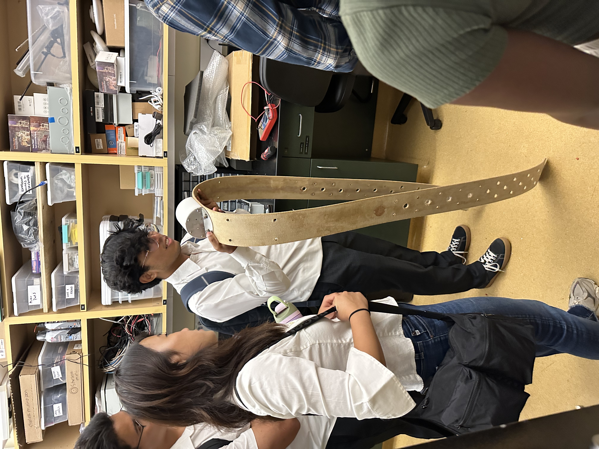
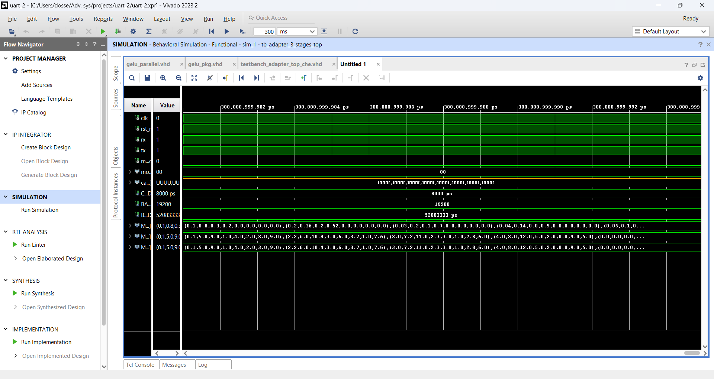
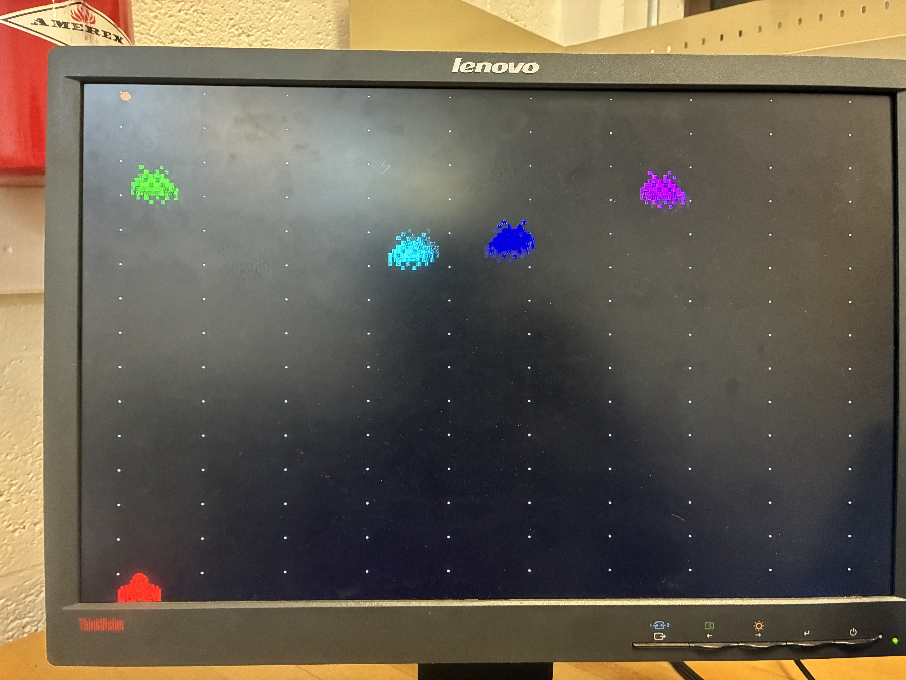
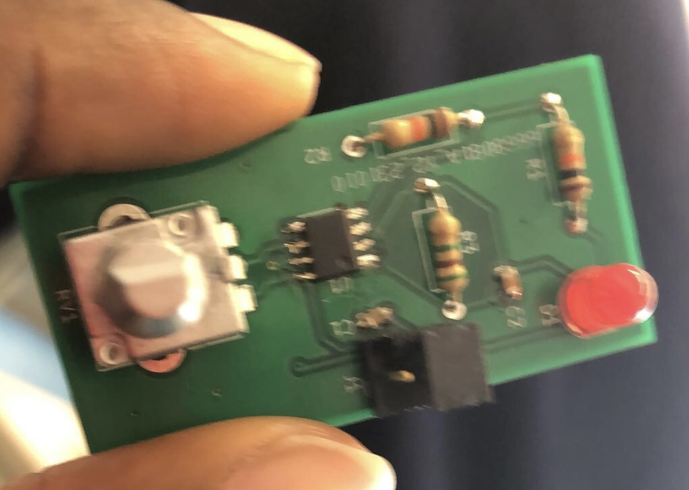

Projects
MeDoc
A solar-powered, low-cost wearable health monitoring network for remote communities in Ghana and similar regions with limited healthcare infrastructure. The device collects vitals — heart rate, SpO₂, temperature, motion — and transmits ultra-compact packets over LoRa to a clinic gateway, enabling real-time triage and SMS alerting even without reliable mobile networks.
- STM32L4 MCU with SX1262 LoRa radio; full LoRaWAN OTAA stack
- On-device int8 quantized 1D Conv autoencoder (TFLite Micro / CMSIS-NN) for anomaly detection and compression — typical normal frame: 12–14 B
- Store-and-forward queue (200+ frames in FRAM/flash) for gateway loss resilience
- Solar + MPPT charging; power-positive design targeting ≤16 mAh/day total draw
- ChirpStack LoRaWAN server → FastAPI backend → Grafana dashboard + SMS/USSD alerts
- Pilot deployment plan: 20 devices, 1 gateway, $2,000 BOM for underserved community rollout

Acoustic Species Collar
- 2D convolutional autoencoder (librosa + PyTorch) for audio compression and transmission over LoRa on STM32 MCU — achieving 70% reduction in data footprint
- NAND flash data loss management research, reducing projected memory loss by 20%
- Real-world deployment on STM32 MCU board for wildlife monitoring in conservation settings

FPGA Hardware Accelerator
Undergraduate research project building a custom hardware accelerator on FPGA in collaboration with a Howard faculty advisor. Responsible for full UART communication integration, enabling high-speed data transfer between the accelerator and host systems.
- UART controller design and integration in VHDL — including baud rate generation, TX/RX state machines, and FIFO buffering
- Timing closure and simulation on Vivado; functional verification with testbenches
- Interdisciplinary collaboration within a research team

HallPass — SoC Access Control
Hardware security research preventing unauthorized information access on System-on-Chip modules by designing and simulating multiple access control architectures with real performance-resource tradeoffs.
- 3 distinct access control models designed in SystemVerilog and simulated on Vivado
- Python3 policy engine restricting unauthorized proxy reads on SoC
- Evaluated each model against resource utilization, latency, and security guarantees
Kapcher — Biometric Auth Device
A physical hardware authentication device that authorizes payments using facial recognition and hand gesture verification — all computed on-device. Your biometric never touches the internet.
- Raspberry Pi 4 running MediaPipe face + gesture ML inference entirely on-device; no cloud, no biometric transmission
- 16×2 LCD controller written from scratch — direct GPIO bit-banging of the HD44780 protocol with no I2C backpack
- Flask API server auto-starts on boot; DTW (Dynamic Time Warping) for gesture matching against encrypted local landmark reference
- Full Stripe Payment Intents integration — funds held on auth request, only captured on hardware confirmation signal
Alien Boom — FPGA Game
Full game designed in VHDL on a Nexys-A7 100T FPGA board using sequential and combinational logic — from game logic to VGA display output, all implemented in hardware description language.
- Custom VGA controller outputting live video from FPGA to monitor
- Player input via switches and buttons; score tracking on 7-segment LED display
- State machine architecture handling game loop, collision detection, and scoring

Light Sensor PCB
Designed, laid out, and manufactured a modular light sensor PCB using KiCAD — intended to integrate cleanly into larger circuit assemblies and appliances.
- Full schematic capture → PCB layout → Gerber generation workflow in KiCAD
- Hand-soldered SMD and through-hole components on fabricated board
- Modular design with standard connector footprints for downstream integration
